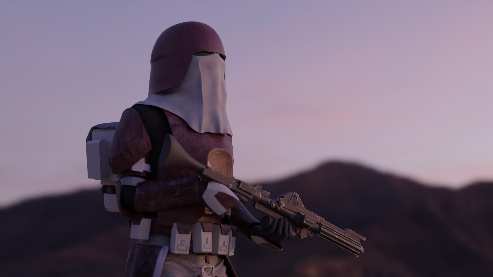
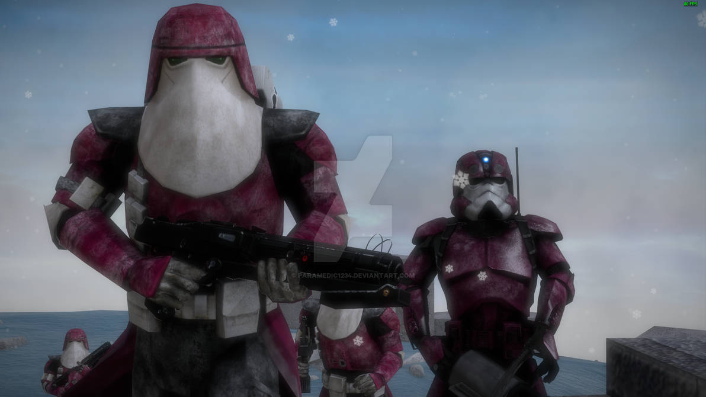
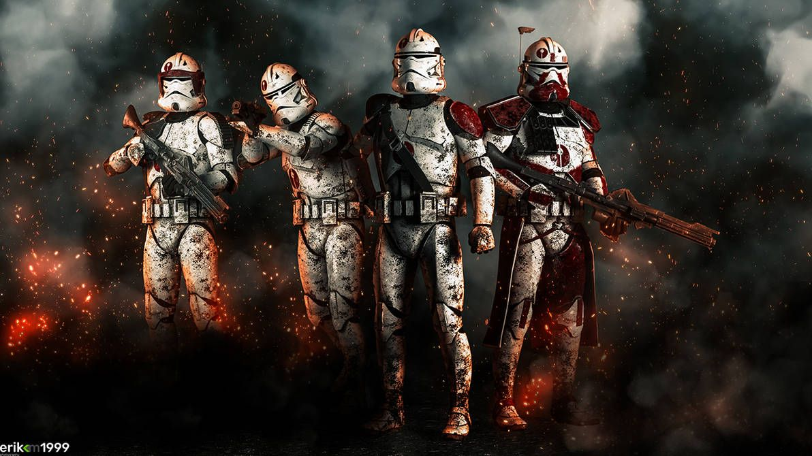
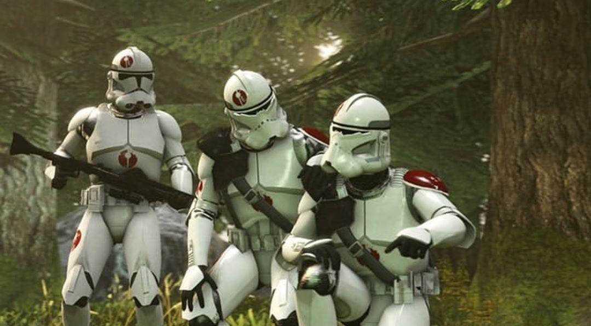

21st Nova Corps
 Les Marines Galactiques, aussi nommé le 21ème Nova Corps, étaient des soldats d'élite de la Grande Armée de la République formés pour se battre dans des conditions rudes, que ce soit dans des lieux aux fortes intempéries ou dans des froids polaires intenses.
Durant la Guerre des Clones, ils combattirent sur la planète gelée de Mygeeto dans la Bordure Extérieure contre la Confédération des Systèmes Indépendants. Ce fut l'une des batailles les plus longues de la guerre.
Les Marines étaient commandés par le Maître Jedi et Général Jedi Ki-Adi-Mundi et le commandant clone Bacara.

Ki-Adi-Mundi n'était pas le seul Jedi à s'être trompé sur les limites de Dooku. L'ancien Jedi supervisa l'exécution d'Obi-Wan Kenobi, Anakin Skywalker et Padmé Amidala. L'arrivée soudaine des Jedi, incluant Ki-Adi-Mundi, a permis de libérer les trois prisonniers. Ki-Adi-Mundi et plusieurs membres du Conseil Jedi se sont battus contre les Geonosiens et les forces des Séparatistes. Les Jedi étaient préparés à s'occuper des Geonosiens, mais ils furent surpris par l'immensité de l'armée des Séparatistes. Plusieurs Jedi ont succombé durant cette bataille, Ki-Adi-Mundi était un des survivants.
Commandant dans la Grande Armée de la République, Bacara (matricule CC-1138), lutta à la tête des Marines Galactiques, aux côtés du général Ki-Adi-Mundi contre les ennemis Séparatistes de la République Galactique sur Mygeeto. Bien qu'ayant soutenu les Jedi dans de nombreuses batailles, sa loyauté allait à la République, et donc au Chancelier Suprême : il obtempéra donc lors de l'exécution de l'Ordre 66 et élimina Ki-Adi-Mundi avec ses compagnons des Marines Galactiques.
Bacara avait obtenu le grade de commandant clone maréchal. Après la bataille de Geonosis, il fit partie des commandants sélectionnés pour être entraînés par le Commando de Reconnaissance Avancée Alpha-17. Il y gagna en capacité d'adaptation tactique et en autonomie, des compétences qu'il transmettra à sa propre unité.
91st Recon Corps
Le 91ème Corps de Reconnaissance Mobile, également connu sous le nom du 91ème corps de Reconnaissance, était un groupe de soldats éclaireurs dans la Grande Armée de la République durant la Guerre des Clones. Comportant des divisions de soldats clones,de soldats BARC et de soldats ARF, le 91e Corps était mené par le commandant clone maréchal Neyo. En plus des Motojet BARC, le corps utilisait des AT-AP Walker et des AT-RT walkers. L'unité de cavalerie d'élite nommée l'escadron Foudre faisait aussi partie du 91ème Corps.
Les marques d'identification du 91ème étaient de petits cercles rouges avec une épée blanche pointant la tête en bas au travers des cercles. Pour protéger leur commandant, les lieutenants du 91ème portaient, comme Neyo, un casque spécialisé très semblables à ceux des assassins clones ce qui leurs donnaient une apparence plus sinistre.

Mace Windu était le deuxième maître de l'Ordre Jedi après Yoda. Sa sagesse et sa puissance étaient légendaires.
Windu a créé une technique particulière de combat au sabre laser : le Vaapad, technique de combat très dangereuse car elle consiste à utiliser des sentiments agressifs de haine et de colère ce qui rapproche dangereusement son utilisateur vers le côté obscur si celui-ci ne peut maîtriser suffisamment ses sentiments. Il s'agit d'une technique extrêmement puissante, qui fut interdite pour le risque mentionné précédemment.
Alors que la Crise Séparatiste du Comte Dooku commençait à ébranler la République, Stass Allie conseilla de nombreux haut gouvernements officiels. Quand l'Ordre Jedi apprit qu'Obi-Wan Kenobi et Anakin Skywalker avaient été capturés par les Séparatistes sur Geonosis, Stass Allie laissa de côté son rôle de conseillère pour rejoindre l'équipe de secours et aider le sauvetage. L'une des rares Jedi à avoir survécut au massacre de Geonosis, Stass Allie participa à plusieurs autres batailles conséquentes, malgré son désir de se concentrer à la guérison.
Alors qu'elle se préparait à envoyer des renforts clones sur Felucia pour assister Aayla Secura et Barriss Offee aux affrontements là-bas, Stass fut informé par Anakin Skywalker qu'elle devait immédiatement se rendre sur Saleucami pour finir ce que les Généraux Aayla Secura et Quinlan Vos avaient commencé.
Neyo, de matricule CC-8826, était un commandant clone maréchal à la tête du 91ème Corps de Reconnaissance de la Grande Armée de la République durant la Guerre des Clones. Il possédait un droïde pit de série DUM, WAC-47.
Neyo fut l'un des commandants clones formés sur la planète Kamino le plus tardivement, au moment ou les clones utilisèrent les armures de phase II. Il dirigea principalement des missions de reconnaissance, mais il lui arriva d'être à la tête de pelotons de soldats clones sur le champ de bataille en quelques mois avant l'exécution de l'Ordre 66.
Ponds, de matricule CT-411, était un commandant clone du 91ème Corps de Reconnaissance durant la Guerre des Clones.
Il fut l'un des premiers commandant clone à combattre la Confédération des Systèmes Indépendants puisqu'il fit partit des troupes envoyés sur Geonosis pour sauver Anakin Skywalker, Obi-Wan Kenobi et Padmé Amidala et pour contrecarrer les plans des Séparatistes. Il fut alors affecté à Mace Windu pour la bataille, affectation qui se poursuivit durant la Guerre des Clones, sur Ryloth et Malastare notamment. Ponds fut tué en 21 av.BY par la chasseuse de primes Aurra Sing, aidant Boba Fett à venger la mort de son père, Jango Fett, décapité sur Geonosis par Mace Windu.
Razor, de matricule CT-6910, était un soldat clone de la Force de Reconnaissance Avancée qui servait dans l'escadron Lightning de la Grande Armée de la République durant la Guerre des Clones.
Stak était un soldat clone de la Force de Reconnaissance Avancée qui servait dans l'escadron Lightning de la Grande Armée de la République durant la Guerre des Clones.
WAC-47 était un droïde pit de série DUM appartenant au commandant clone Neyo durant la Guerre des Clones. Il rejoignit la D-Squad commandée par Meebur Gascon pour réaliser une mission de haute importance dans un vaisseau Séparatiste, mission qui fut un succès après de nombreuses péripéties, notamment au côté de Gregor.